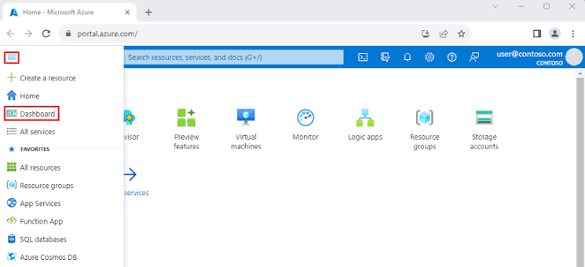

Cloud Security Administration • Identity and Access Management • Network Security • Monitoring • Microsoft Defender for Cloud
Microsoft Azure is a cloud computing platform for building, deploying, and managing applications and infrastructure. Its security services help organizations protect identities, networks, workloads, and data across cloud and hybrid environments.
As a Security Analyst, I use Microsoft Azure to manage cloud resources, configure role-based access control, review security recommendations, monitor activity logs, and support secure cloud operations.
My hands-on experience includes Microsoft Entra ID, Azure RBAC, virtual machines, network security groups, Azure Policy, Azure Monitor, Log Analytics, and Microsoft Defender for Cloud.
Cloud Resource Administration and Security Monitoring

This project demonstrates my practical experience working with Microsoft Azure in a cloud environment. The objective was to deploy and secure cloud resources, manage identities and permissions, monitor activity, and improve the overall security posture.
Throughout this project, I configured resource groups, virtual machines, virtual networks, network security groups, and role-based access control. I also reviewed logs and security recommendations through Azure Monitor and Microsoft Defender for Cloud.
The project involved applying Azure Policy, reviewing identity access, and using Log Analytics to provide centralized monitoring and support secure, well-governed cloud operations.
By combining identity security, network controls, policy enforcement, and continuous monitoring, this project strengthened visibility and reduced cloud configuration risk.
Security Analyst
Enterprise Cloud Operations
Microsoft Azure
Cloud Administration & Security
Microsoft Azure & Microsoft Defender for Cloud
Entra ID • Azure RBAC • Azure Policy
Activities performed while working with Microsoft Azure
Configured secure cloud resources and reviewed Defender for Cloud recommendations to identify and remediate configuration risks.
Managed users, groups, role assignments, and least-privilege access using Microsoft Entra ID and Azure RBAC.
Configured virtual networks and network security groups to control inbound and outbound traffic between Azure resources.
Used Azure Monitor, Log Analytics, and Azure Policy to track activity, review compliance, and maintain secure configurations.
Security tools and Microsoft technologies used throughout the project
✔ Deployed and secured Azure cloud resources.
✔ Applied least-privilege access with Entra ID and Azure RBAC.
✔ Configured virtual networks and network security groups.
✔ Centralized monitoring with Azure Monitor and Log Analytics.
✔ Improved governance using Azure Policy and Defender for Cloud.
Microsoft Azure
Cloud Resource Administration
Identity Governance
Network Security
Microsoft Defender for Cloud
Azure Security
Azure Monitor and Log Analytics
Business value and security improvements achieved through Microsoft Azure
Centralized monitoring of enterprise security events enabled faster detection of suspicious activities across multiple environments.
Reviewed Microsoft Defender for Cloud recommendations and remediated insecure resource settings to reduce configuration risk.
Applied role-based access control and least-privilege principles across users, groups, subscriptions, and resources.
Correlated security events from multiple data sources to improve visibility and investigation efficiency.
Integrated Microsoft Defender for Cloud, Azure Monitor, and Log Analytics to strengthen cloud workload visibility and protection.
Supported enterprise security practices aligned with industry standards and organizational governance requirements.
This page showcases my hands-on experience with Microsoft Azure, where I manage cloud resources, secure identities with Microsoft Entra ID and Azure RBAC, configure network controls, apply Azure Policy, and monitor workloads with Azure Monitor and Microsoft Defender for Cloud.
Cloud Administration • Identity Security • Monitoring and Governance
Secure Azure resource deployment and governance process
Defined resource groups, regions, naming standards, access needs, and security requirements for the cloud environment.
Deployed compute, storage, and networking resources through the Azure portal, Azure CLI, and PowerShell.
Assigned least-privilege roles, reviewed access, and applied governance controls with Entra ID, Azure RBAC, and Azure Policy.
Reviewed activity logs, alerts, policy compliance, and Defender for Cloud recommendations, then remediated identified risks.
End-to-end lifecycle used to deploy, secure, and monitor Azure resources.
Azure Resource Manager
Identified workload requirements, selected Azure services, organized resources into resource groups, and defined access, networking, monitoring, and governance requirements.
Azure Portal, CLI, and PowerShell
Deployed and configured virtual machines, storage, virtual networks, subnets, and network security groups using Azure administration tools.
Microsoft Entra ID and Azure RBAC
Managed users and groups, assigned role-based permissions, and applied least-privilege access across subscriptions, resource groups, and individual resources.
Azure Policy and Defender for Cloud
Applied policies, reviewed regulatory compliance, evaluated secure-score recommendations, and remediated insecure cloud configurations.
Enterprise Security Operations
Used Azure Monitor, activity logs, alerts, and Log Analytics to evaluate resource health, document improvements, and strengthen the cloud security posture.
Microsoft technologies and security tools used throughout this project